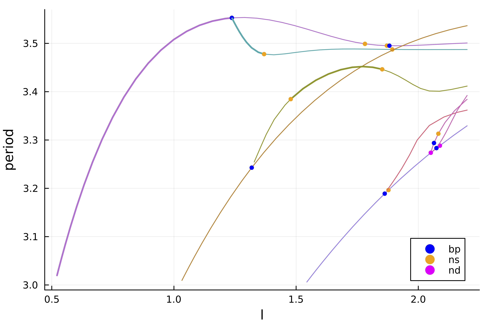

🟡 1d Brusselator (automatic)
We look at the Brusselator in 1d (see [Lust]). The equations are as follows
\[\begin{aligned} \frac { \partial X } { \partial t } & = \frac { D _ { 1 } } { l ^ { 2 } } \frac { \partial ^ { 2 } X } { \partial z ^ { 2 } } + X ^ { 2 } Y - ( β + 1 ) X + α \\ \frac { \partial Y } { \partial t } & = \frac { D _ { 2 } } { l ^ { 2 } } \frac { \partial ^ { 2 } Y } { \partial z ^ { 2 } } + β X - X ^ { 2 } Y \end{aligned}\]
with Dirichlet boundary conditions
\[\begin{array} { l } { X ( t , z = 0 ) = X ( t , z = 1 ) = α } \\ { Y ( t , z = 0 ) = Y ( t , z = 1 ) = β / α } \end{array}\]
These equations have been introduced to reproduce an oscillating chemical reaction. There is an obvious equilibrium $(α, β / α)$. Here, we consider bifurcations with respect to the parameter $l$.
We start by writing the PDE
using Revise
using BifurcationKit, Plots, SparseArrays, Parameters
const BK = BifurcationKit
f1(u, v) = u * u * v
function Fbru!(f, x, p, t = 0)
@unpack α, β, D1, D2, l = p
n = div(length(x), 2)
h2 = 1.0 / n^2
c1 = D1 / l^2 / h2
c2 = D2 / l^2 / h2
u = @view x[1:n]
v = @view x[n+1:2n]
# Dirichlet boundary conditions
f[1] = c1 * (α - 2u[1] + u[2] ) + α - (β + 1) * u[1] + f1(u[1], v[1])
f[end] = c2 * (v[n-1] - 2v[n] + β / α) + β * u[n] - f1(u[n], v[n])
f[n] = c1 * (u[n-1] - 2u[n] + α ) + α - (β + 1) * u[n] + f1(u[n], v[n])
f[n+1] = c2 * (β / α - 2v[1] + v[2]) + β * u[1] - f1(u[1], v[1])
for i=2:n-1
f[i] = c1 * (u[i-1] - 2u[i] + u[i+1]) + α - (β + 1) * u[i] + f1(u[i], v[i])
f[n+i] = c2 * (v[i-1] - 2v[i] + v[i+1]) + β * u[i] - f1(u[i], v[i])
end
return f
end
Fbru(x, p, t = 0) = Fbru!(similar(x), x, p, t)For computing periodic orbits, we will need a Sparse representation of the Jacobian:
function Jbru_sp(x, p)
@unpack α, β, D1, D2, l = p
# compute the Jacobian using a sparse representation
n = div(length(x), 2)
h = 1.0 / n; h2 = h*h
c1 = D1 / p.l^2 / h2
c2 = D2 / p.l^2 / h2
u = @view x[1:n]
v = @view x[n+1:2n]
diag = zeros(eltype(x), 2n)
diagp1 = zeros(eltype(x), 2n-1)
diagm1 = zeros(eltype(x), 2n-1)
diagpn = zeros(eltype(x), n)
diagmn = zeros(eltype(x), n)
@. diagmn = β - 2 * u * v
@. diagm1[1:n-1] = c1
@. diagm1[n+1:end] = c2
@. diag[1:n] = -2c1 - (β + 1) + 2 * u * v
@. diag[n+1:2n] = -2c2 - u * u
@. diagp1[1:n-1] = c1
@. diagp1[n+1:end] = c2
@. diagpn = u * u
return spdiagm(0 => diag, 1 => diagp1, -1 => diagm1, n => diagpn, -n => diagmn)
endWe could have used DiffEqOperators.jl like for the Swift-Hohenberg tutorial instead of writing our laplacian ourselves.
Finally, it will prove useful to have access to the hessian and third derivative
We shall now compute the equilibria and their stability.
n = 300
# parameters of the Brusselator model and guess for the stationary solution
par_bru = (α = 2., β = 5.45, D1 = 0.008, D2 = 0.004, l = 0.3)
sol0 = vcat(par_bru.α * ones(n), par_bru.β/par_bru.α * ones(n))
# bifurcation problem
probBif = BK.BifurcationProblem(Fbru, sol0, par_bru, (@lens _.l);
J = Jbru_sp,
plot_solution = (x, p; kwargs...) -> (plotsol(x; label="", kwargs... )),
record_from_solution = (x, p) -> x[div(n,2)])For the eigensolver, we use a Shift-Invert algorithm (see Eigen solvers (Eig))
eigls = EigArpack(1.1, :LM)We continue the trivial equilibrium to find the Hopf points
opt_newton = NewtonPar(eigsolver = eigls, tol = 1e-9)
opts_br_eq = ContinuationPar(dsmin = 0.001, dsmax = 0.01, ds = 0.001,
p_max = 1.9, nev = 21,
newton_options = opt_newton, max_steps = 1000,
# specific options for precise localization of Hopf points
n_inversion = 6)
br = continuation(probBif, PALC(), opts_br_eq, normC = norminf) ┌─ Curve type: EquilibriumCont
├─ Number of points: 120
├─ Type of vectors: Vector{Float64}
├─ Parameter l starts at 0.3, ends at 1.9
├─ Algo: PALC
└─ Special points:
If `br` is the name of the branch,
ind_ev = index of the bifurcating eigenvalue e.g. `br.eig[idx].eigenvals[ind_ev]`
- # 1, hopf at l ≈ +0.51133101 ∈ (+0.51130339, +0.51133101), |δp|=3e-05, [converged], δ = ( 2, 2), step = 19, eigenelements in eig[ 20], ind_ev = 2
- # 2, hopf at l ≈ +1.02261272 ∈ (+1.02260927, +1.02261272), |δp|=3e-06, [converged], δ = ( 2, 2), step = 56, eigenelements in eig[ 57], ind_ev = 4
- # 3, hopf at l ≈ +1.53388407 ∈ (+1.53388364, +1.53388407), |δp|=4e-07, [ guessL], δ = ( 2, 2), step = 93, eigenelements in eig[ 94], ind_ev = 6
- # 4, endpoint at l ≈ +1.90000000, step = 119
We obtain the following bifurcation diagram with 3 Hopf bifurcation points
scene = plot(br)Normal form computation
We can compute the normal form of the Hopf points as follows
hopfpt = get_normal_form(br, 1)SuperCritical - Hopf bifurcation point at l ≈ 0.5113310149554013.
Frequency ω ≈ 2.1394991675560022
Period of the periodic orbit ≈ 2.936755200684191
Normal form z⋅(iω + a⋅δp + b⋅|z|²):
┌─ a = 0.8799957023468183 + 0.5689776784336106im
└─ b = -0.0015608102901474399 + 0.00156348109700865im
Continuation of Hopf points
We use the bifurcation points guesses located in br.specialpoint to turn them into precise bifurcation points. For the second one, we have
# index of the Hopf point in br.specialpoint
ind_hopf = 2
# newton iterations to compute the Hopf point
hopfpoint = newton(br, ind_hopf; normN = norminf)
BK.converged(hopfpoint) && printstyled(color=:red, "--> We found a Hopf Point at l = ", hopfpoint.u.p[1], ", ω = ", hopfpoint.u.p[2], ", from l = ", br.specialpoint[ind_hopf].param, "\n")--> We found a Hopf Point at l = 1.0226125272265558, ω = -2.139509289532976, from l = 1.022612721393132We now perform a Hopf continuation with respect to the parameters l, β
You don't need to call newton first in order to use continuation.
optcdim2 = ContinuationPar(dsmin = 0.001, dsmax = 0.05, ds= 0.01, p_max = 6.5, p_min = 0.0, newton_options = opt_newton, detect_bifurcation = 0)
br_hopf = continuation(br, ind_hopf, (@lens _.β),
optcdim2, verbosity = 2,
# detection of codim 2 bifurcations with bisection
detect_codim2_bifurcation = 2,
# we update the Fold problem at every continuation step
update_minaug_every_step = 1,
jacobian_ma = :minaug, # specific to large dimensions
normC = norminf)
scene = plot(br_hopf)Computation of the branch of periodic orbits (Finite differences)
We now compute the bifurcated branches of periodic solutions from the Hopf points using Periodic orbits based on Trapezoidal rule. One has just to pass a PeriodicOrbitTrapProblem.
We start by providing a linear solver and some options for the continuation to work
# automatic branch switching from Hopf point
opt_po = NewtonPar(tol = 1e-10, verbose = true, max_iterations = 15)
opts_po_cont = ContinuationPar(dsmin = 0.001,
dsmax = 0.04, ds = 0.01,
p_max = 2.2,
max_steps = 30,
newton_options = opt_po,
plot_every_step = 1,
nev = 11,
tol_stability = 1e-6,
)# number of time slices for the periodic orbit
M = 51
probFD = PeriodicOrbitTrapProblem(M = M;
# specific method for solving linear system
# of Periodic orbits with trapeze method
# You could use the default one :FullLU (slower here)
jacobian = :BorderedSparseInplace)
br_po = continuation(
# arguments for branch switching from the first
# Hopf bifurcation point
br, 1,
# arguments for continuation
opts_po_cont, probFD;
# regular options for continuation
verbosity = 3, plot = true,
plot_solution = (x, p; kwargs...) -> heatmap!(reshape(x[1:end-1], 2*n, M)'; ylabel="time", color=:viridis, kwargs...),
normC = norminf)
Scene = title!("")Using the above call, it is very easy to find the first branches:

We note that there are several branch points (blue points) on the above diagram. This means that there are additional branches in the neighborhood of these points. We now turn to automatic branch switching on these branches. This functionality, as we shall see, is only provided for PeriodicOrbitTrapProblem.
Let's say we want to branch from the first branch point of the first curve pink branch. The syntax is very similar to the previous one:
br_po2 = continuation(
# arguments for branch switching
br_po, 1,
# arguments for continuation
opts_po_cont;
ampfactor = 1., δp = 0.01,
verbosity = 3, plot = true,
plot_solution = (x, p; kwargs...) -> heatmap!(reshape(x[1:end-1], 2*n, M)'; ylabel="time", color=:viridis, kwargs...),
normC = norminf)It is now straightforward to get the following diagram

Computation of the branch of periodic orbits (Standard Shooting)
Note that what follows is not really optimized on the
DifferentialEquations.jlside. Indeed, we do not use automatic differentiation, we do not pass the sparsity pattern, ...
We now turn to a different method based on the flow of the Brusselator. To compute this flow (time stepper), we need to be able to solve the differential equation (actually a PDE) associated to the vector field Fbru. We will show how to do this with an implicit method Rodas4P from DifferentialEquations.jl. Note that the user can pass its own time stepper but for convenience, we use the ones in DifferentialEquations.jl. More information regarding the shooting method is contained in Periodic orbits based on the shooting method.
We then recompute the locus of the Hopf bifurcation points using the same method as above.
n = 100
# different parameters to define the Brusselator model and guess for the stationary solution
par_bru = (α = 2., β = 5.45, D1 = 0.008, D2 = 0.004, l = 0.3)
sol0 = vcat(par_bru.α * ones(n), par_bru.β/par_bru.α * ones(n))
probBif = re_make(probBif, u0 = sol0)
eigls = EigArpack(1.1, :LM)
opts_br_eq = ContinuationPar(dsmin = 0.001,
dsmax = 0.00615, ds = 0.0061,
p_max = 1.9,
nev = 21,
plot_every_step = 50,
newton_options = NewtonPar(eigsolver = eigls,
tol = 1e-9), max_steps = 200)
br = continuation(probBif, PALC(), opts_br_eq, normC = norminf)We need to build a problem which encodes the Shooting functional. This done as follows where we first create the time stepper:
using DifferentialEquations
FOde(f, x, p, t) = Fbru!(f, x, p, t)
u0 = sol0 .+ 0.01 .* rand(2n)
# we pass our jacobian function to increase performances
# an inplace jacobian would be favoured
vf = ODEFunction(FOde, jac = (J,u,p,t) -> J .= Jbru_sp(u, p), jac_prototype = Jbru_sp(u0, par_bru))
# this is the ODE time stepper when used with `solve`
prob_ode = ODEProblem(vf, u0, (0., 1000.), par_bru; abstol = 1e-10, reltol = 1e-8)You can really speed this up by using the improved ODEProblem
using SparseDiffTools, SparseArrays
jac_prototype = Jbru_sp(ones(2n), par_bru)
jac_prototype.nzval .= ones(length(jac_prototype.nzval))
_colors = matrix_colors(jac_prototype)
vf = ODEFunction(FOde; jac_prototype = jac_prototype, colorvec = _colors)
prob_ode = ODEProblem(vf, u0, (0.0, 520.), par_bru) # gives 0.22sWe are now ready to call the automatic branch switching. Note how similar it is to the previous section based on finite differences. This case is more deeply studied in the tutorial 1d Brusselator (advanced user). We use a parallel Shooting.
# linear solvers
ls = GMRESIterativeSolvers(reltol = 1e-7, maxiter = 100)
eig = EigKrylovKit(tol= 1e-12, x₀ = rand(2n), dim = 40)
# newton parameters
optn_po = NewtonPar(verbose = true,
tol = 1e-7,
linsolver = ls,
eigsolver = eig)
# continuation parameters
opts_po_cont = ContinuationPar(dsmax = 0.03, ds= 0.01, p_max = 2.5, max_steps = 10,
newton_options = optn_po, nev = 15, tol_stability = 1e-3,
plot_every_step = 2)
Mt = 2 # number of shooting sections
br_po = continuation(
br, 1,
# arguments for continuation
opts_po_cont,
# this is where we tell that we want Parallel Standard Shooting
ShootingProblem(Mt, prob_ode, Rodas4P(), parallel = true, jacobian = BK.FiniteDifferencesMF());
# the next option is not necessary
# it speeds up the newton iterations
# by combining the linear solves of the bordered linear system
linear_algo = MatrixFreeBLS(@set ls.N = 2+2n*Mt),
verbosity = 3, plot = true,
plot_solution = (x, p; kwargs...) -> BK.plot_periodic_shooting!(x[1:end-1], Mt; kwargs...),
normC = norminf)and you should see

Computation of the branch of periodic orbits (Poincaré Shooting)
We now turn to another Shooting method, namely the Poincaré one. We can provide this method thanks to the unique functionalities of DifferentialEquations.jl. More information is provided at PoincareShootingProblem and Periodic orbits based on the shooting method but basically, it is a shooting method between Poincaré sections $\Sigma_i$ (along the orbit) defined by hyperplanes. As a consequence, the dimension of the unknowns is $M_{sh}\cdot(N-1)$ where $N$ is the dimension of the phase space. Indeed, each time slice lives in an hyperplane $\Sigma_i$. Additionally, the period $T$ is not an unknown of the method but rather a by-product. However, the method requires the time stepper to find when the flow hits an hyperplane $\Sigma_i$, something called event detection.
We show how to use this method, the code is very similar to the case of the Parallel Standard Shooting:
# linear solvers
ls = GMRESIterativeSolvers(reltol = 1e-8, maxiter = 100)
eig = EigKrylovKit(tol= 1e-12, x₀ = rand(2n-1), dim = 50)
# newton parameters
optn_po = NewtonPar(verbose = true,
tol = 1e-7,
linsolver = ls,
eigsolver = eig)
# continuation parameters
opts_po_cont = ContinuationPar(dsmax = 0.03, ds = 0.005, p_max = 2.5, newton_options = optn_po, nev = 10, tol_stability = 1e-5, plot_every_step = 2)
# number of time slices
Mt = 2
br_po = continuation(
br, 1,
# arguments for continuation
opts_po_cont,
PoincareShootingProblem(Mt, prob_ode, Rodas4P(); jacobian = BK.FiniteDifferencesMF(), update_section_every_step = 0);
# the next option is not necessary
# it speeds up the newton iterations
# by combining the linear solves of the bordered linear system
linear_algo = MatrixFreeBLS(@set ls.N = (2n-1)*Mt+1),
verbosity = 3, plot = true,
plot_solution = (x, p; kwargs...) -> BK.plot_periodic_shooting!(x[1:end-1], Mt; kwargs...),
normC = norminf)and you should see:

References
- Lust
Numerical Bifurcation Analysis of Periodic Solutions of Partial Differential Equations, Lust, 1997.